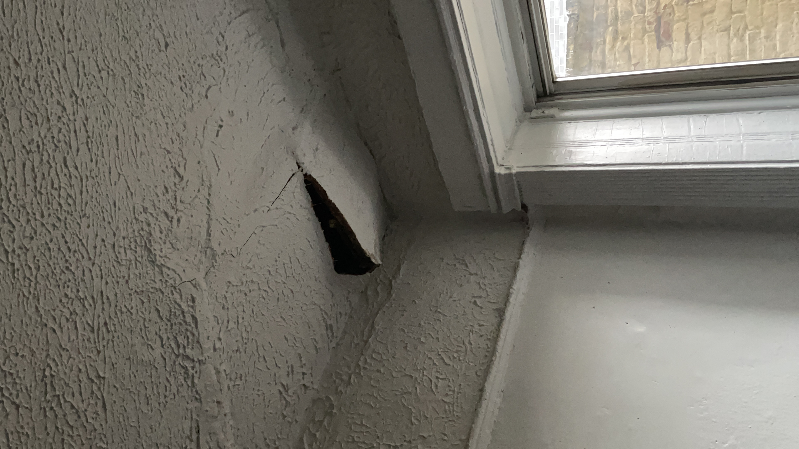
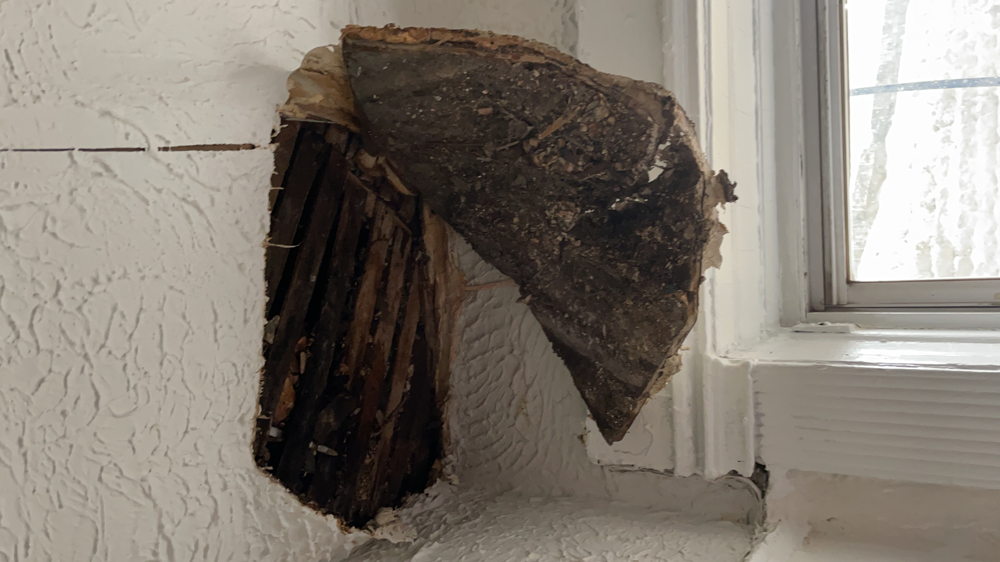
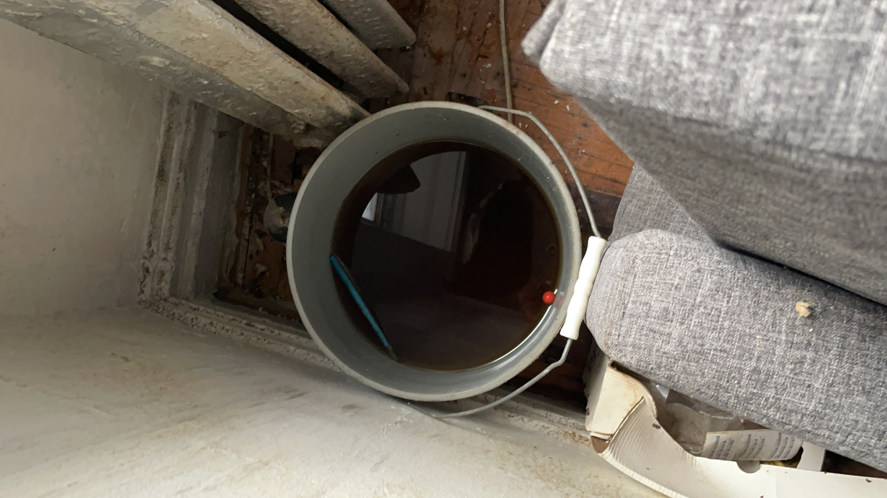

hi i'm fran welcome to my blog where i will be talking about my experience with our collective collage poem game which is currently a work in progress. i hope that this will be a documentation of our semester-long process and also a helpful tool for personal and collective reflection later on.
we decided on our process for the week and now we're gonna make some games
this comic makes me weak. it's very good. the first thing i thought of was a leak that i had in my apartment the past week.
  some questions that naturally arose in me were "where did this pen come from?" and "i wonder what this water tastes like"
i've been wanting to make a game about something boring or mundane. like mumblecore but videogames. or as Ty poetically put it "an exceedingly beautiful corner." i kind of just want to simulate a leak in your ceiling
tools-wise, i think i want to try to do this with html and javascript and without using the html5 canvas. i've been pretty jazzed on making games for the web for the past year or so. it pains me that games made with Unity are so heavy and make my laptop hot. we were talking about tools and at one point someone joked "yeah we should write our own 2d game engine for the web" and the joke is that that would really dumb bc who has the time for that and i laughed bc yeah, we've all been there lol. unless...
i kind of want to try to do something with a similar materiality to walky.space. most web games/interactive arts use the HTML5 canvas, but walky does not. it's just moving divs around. this sort of material is really cool to me. the thing is that walky uses React, and i wonder why. i don't want to use React, it feels like too much...
hopefully this idea isn't too much work to pull off. i'd like to have something to show earlier in the week so that it can get haunted and so that i have time to do some haunting.
today we're going to start making our game(s) which i'm excited about. i already have a vague idea of where i want to go with my piece :) but first i'll reflect a little on what we've done so far.
i just read over darwin's 'wednesday febuary 3' blog entry and the excquisite corpse documentation by mut. thank god someone's already documented the details of our process thank youuuuuuuuu
darwin articulated really well some feelings that i share. i feel similarly about George leaving... i wonder if we could've done something differently
and i would say my motivations for doing what we're doing are similar. after a few experiences of collaborating with people and making things on my own, i feel pretty cynical about working on something expressive/creative with others. part of this is that i feel like i like the things that i make by myself more than those that i make with others, and some of my favorite work is also made by one author (i'll add cecile richard, molleindustria. also um.... most books/stories/poems??)
and i'll more explicitly focus on another aspect which is how the process itself feels. to me there's two parts to it, there's the question of 1) "is the art object(s) that we produce something we are happy with/proud of?" and 2) "is the process enjoyable/fruitful/feels good?" and im a greedy bitch and i want both.
this experiment rests on the assumption that it's worth it to try to design a formal process of making things together. but already we've come upon some instances where its less about the process and more about... paying attention and being sensitive and communicating with each other? so maybe it's just important that we have a mutual understanding or like-minded or similar values, in which case whatever process we end up with is just window-dressing anyway? the truth is probably somewhere in the middle. how important is having a clever process, and how much is it all the little social, improvisational details of working with each other? in any case, i've been thinking a lot about how to communicate with my group, including indirectly through these blogposts (devil emoji)
speaking of, it's interesting that darwin was worried he brought the energy down in one of group meetings. i think his calm is lovely and makes space for earnest conversation. i find myself getting anxious and usually my move is to cut the try to cut the tension with a usually bad joke but i think sometimes trying to bring the mood up gets in the way of teasing out/working through difficult thoughts
i've been feeling tired after our conversations and sessions. zooming for more than an hour is for masochists. but also i think what we've been doing/talking about is tiring work. exquusite corpse is fun but requires a lot of concentration. and so do the type of conversations we've been having. we've been talking a lot about reference work, especially past experiments that bear resemblance to ours (which i still have to play: utopias, circle0, experiment 12, jrpgsystems ...). it's all work. even writing this blogpost is now taking me probably too long. jesus it's 5pm already what the fuck i need to actually make the a game. i'm happy we're doing all this, i think its valuable, especially in the beginning. but goddamn, there's only so much time in a day and so much energy in my animal body.
this is obviously reminding me of sfpc, which is weird. there's a lot of differences. but this sort of earnest collective spirit, and emphasis on documentation and thinking about process... i remember working on my first blogpost about the vera hw. i think i only ended up doing like 1 and a half posts for the entire time i was there though hahah. so idk. we'll seeeeeeee